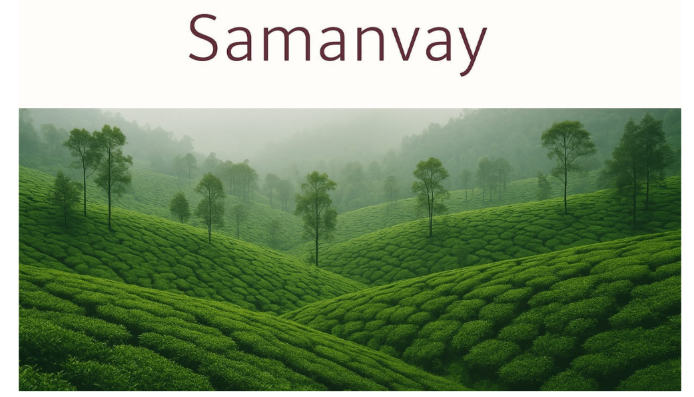
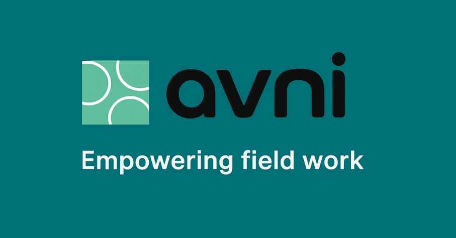

Small Teams, Big Impact: How Samanvay Builds Public Tech for the Social Sector

Today marked the beginning of Phase 3, and I joined a new group of teammates for our field visit to Samanvay Foundation a non-profit tech organization located in Indiranagar, Bengaluru[cite: 52]. I walked in with curiosity, but walked out inspired by what a small, mission-driven team can accomplish in the world of social good[cite: 52].
We were warmly welcomed by the team, and over the course of the day, we met almost every department from product development and implementation to business development and support[cite: 52]. The most surprising part? They do all this work with just 22 people, many of whom work remotely[cite: 52].
Here is, How My Day Went - My Sessions Timeline
| Session | Time | People Involved | Focus/Theme |
|---|---|---|---|
| Intro Session | 10:00 AM-11:40 AM | Overview of Samaanvay's vision, story, project portfolio & the Avni App[cite: 52] | |
| Reflection Round | 11:40 AM-12:45 PM | Dialogue on technology in the social sector what it means, how it's used[cite: 52] | |
| Developer Session | 12:50 PM 1:30 PM | Om | Technical explanation of Avni's architecture, features, and field-level use[cite: 52] |
| Lunch Break | 1:40 PM 2:30 PM | Home-style lunch with the team[cite: 52] | |
| Implementation View | 2:30 PM - 3:00 PM | Arjun Khandelwal, Parthi, Vinay Venu, Himesh Bharadwaj, Siddharth (Implementation Team) | Insights into software development cycle, testing, and feedback integration[cite: 52] |
| Business Process | 3:00 PM - 3:40 PM | Parthi (Business Development Team) | Walkthrough of lead generation and project handoff process[cite: 52] |
| Support Session | 3:45 PM - 4:30 PM | Mohammed Taki (Support Engineer) | Role of project-wide support and responding to client issues post-deployment[cite: 53] |
About Samaanvay Foundation
Founded in 2016, Samaanvay Foundation is a Section 8 non profit company started by four passionate co founders Pradipta Kundu, Vivek Singh, Arjun Khandelwal, and Vinay Venu[cite: 53]. Their mission is to create public digital goods for nonprofits by building open-source tech platforms that are affordable and impact-driven[cite: 53].
As Arjun, one of the co-founders, said:
"We don't build technology for the sake of it. We build what's actually needed."[cite: 53]
The Avni App: Tech Designed for the Field
A big part of the day revolved around their flagship product the Avni App[cite: 53]. Originally built as OpenCHS for health sector NGOs, the app is now widely used across various sectors like education, rural livelihoods, and gender rights[cite: 53].

What makes Avni unique is that it is:
- Offline first: data can be collected without internet and synced later[cite: 54]
- Customizable: tailored dashboards and forms for each NGO[cite: 54]
- Used for: surveys, cohort tracking, impact reporting, case management[cite: 54]
- Trusted by: UNICEF, Govt. of Maharashtra, and more[cite: 54]
We also learned about the five pillars that make Avni special: offline accessibility, multi-tenancy, modular case management, in-app reporting tools, and donor focused impact metrics[cite: 54].
Team Interactions & Insights
1. Conversation with Vinay Venu (Co founder)
Vinay asked us questions about how we understand tech in the social sector and honestly, we struggled a bit[cite: 55]. It was a learning moment[cite: 55]. He challenged our assumptions and gave us case studies from the Avni project to present later[cite: 55].
2. Product Development Team, Himesh & Om
This session was led by Himesh and Om (an intern who just completed his engineering exams)[cite: 55]. They broke down the technical architecture and the mindset behind building flexible apps[cite: 55]. Om's enthusiasm and Himesh's clarity made this session really enjoyable[cite: 55]. What stood out was their approach:
"We build general purpose tools that can solve multiple social problems, not just one."[cite: 55]
3. Implementation Team, Siddharth
Siddharth walked us through the backend process from gathering NGO requirements to managing workflows using Jira and GitHub[cite: 55]. His words:
"We test the same features again and again until the client is fully satisfied."[cite: 55]
That kind of commitment to iterative development really stuck with me[cite: 55].
4. Business Development, Parth
Parth was our main contact throughout the visit[cite: 55]. He explained that their sales strategy is pull based, not push based[cite: 55]. They don't cold, call or pitch aggressively NGOs approach them because of their track record[cite: 55].
"We don't sell; we solve."[cite: 55]
5. Support Team, Mohammed Taki
Taki was funny and relaxed, a great way to end the day[cite: 56]. He shared how his role is to handle client queries, which means knowing context for 60+ projects at all times[cite: 56]. His ability to balance humor and knowledge was admirable[cite: 56].
More Than Just Work: Culture and Connection
One of the most heartwarming things was the non hierarchical atmosphere in the office[cite: 56]. Everyone eats together, shares stories over tea, and genuinely respects each other[cite: 56]. We were also invited to join them for lunch and the food felt just like home[cite: 56].
The entire vibe reminded me that a healthy work culture is just as powerful as good technology when it comes to making real change[cite: 56].
Reflection: Technology That Listens, Learns, and Serves
If I had to sum up the day in one phrase, it would be this:
"When technology listens, it empowers."[cite: 56]
What Samanvay has built is not just a tech company, it's a thoughtful, ethical, and user driven ecosystem[cite: 56]. They listen to NGOs[cite: 56]. They adapt their tools[cite: 56]. They embrace open source values[cite: 56]. And they never forget who their technology is meant to serve[cite: 56].
The visit reminded me that real innovation isn't flashy it's consistent, humble, and deeply aligned with people's needs[cite: 56].